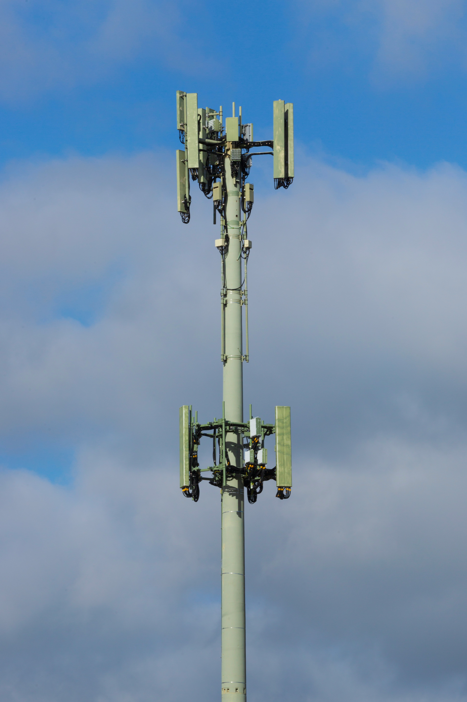

What is ISP?
An Internet Service Provider (ISP) is a business that gives individuals and companies individuals and businesses with access to the Internet. ISPs connect their customers to the Internet backbone — the high-speed data routes that form the core of the Internet. Without an ISP, you cannot access the Internet. Examples of ISPs include Safaricom, Airtel, Telkom Kenya, and globally, companies like Comcast, AT&T, and BT.
💡 Key Insight: ISPs offer different types of connections. Broadband ISPs provide high-speed connections through fiber optic, cable, or ...
Types of ISPs
ISPs offer different types of connections. Broadband ISPs provide high-speed connections through fiber optic, cable, or DSL lines. Mobile ISPs (like Safaricom) provide Internet through 4G and 5G mobile networks. Satellite ISPs (like Starlink) provide Internet in remote areas using satellite signals. Each type varies in speed, reliability, and cost.
How ISPs Work
ISPs maintain large networks of servers, routers, and infrastructure that connect to the global Internet backbone. When you sign up with an ISP, they assign you an IP address and route your traffic through their network. ISPs also provide Domain Name System (DNS) servers, technical support, and sometimes additional services like email hosting or web hosting.
ISP and Privacy
Your ISP can see the websites you visit (though not the content of HTTPS pages), the amount of data you use, and when you are online. This is why many people use VPNs (Virtual Private Networks) to encrypt their Internet traffic and hide it from their ISP. Regulations in different countries control what ISPs can do with this data.